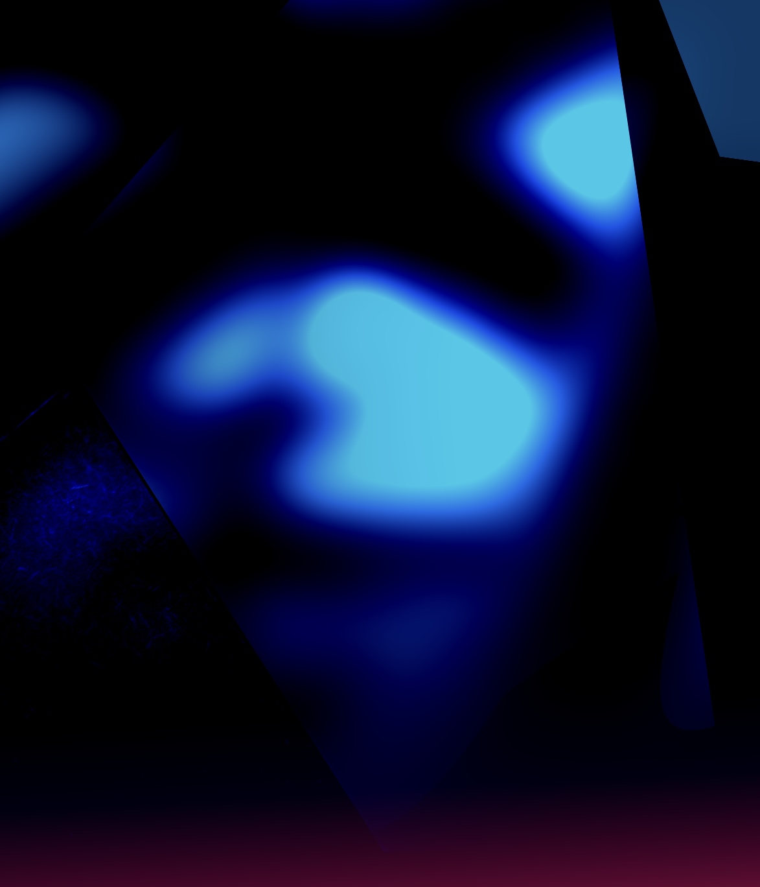
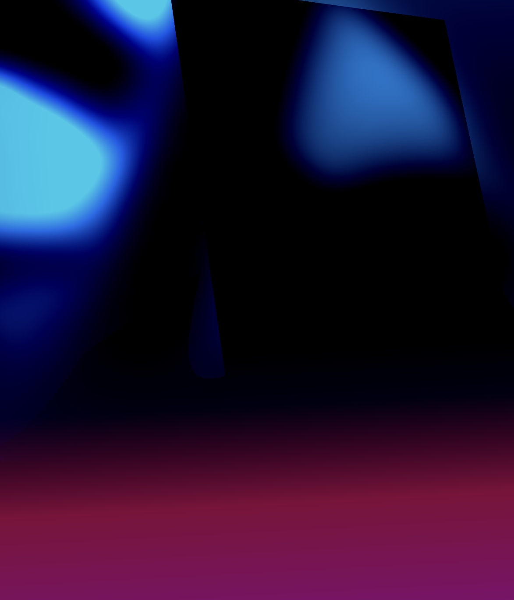

Fragments of memories are chasing the humans throught the whole life. For a better is to forget often but important pieces could be lost during the process. This piece is all about that and more. Broken glass as an interpretation point with glimpses of past which formed our personalities. Contrast material on the bottom stands for all the moments we felt joy and happiness in the living moment but only after flood of time rivers, we realized it was not for the good but rather complete opposite. That's what separates right decisions from wrong, and short term happiness from long term desperation. Hidden meaning of this piece is located on the bottom in form of triangle object which represents time as three balanced elements - past, present and future.
GhostFace K
2022

Digital Painting / Collage
“If I got a problem, a problems got a problem til it's gone.”
― Russell Tyrone Jones
Details

D#1 - Face of the ghost reflected

D#2 - Walking down the alley